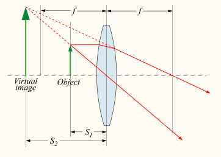

Astronomia
Eu estava aqui o tempo todo, só você não viu!
Who am I?
import resume
name = "joao carlos ariedi filho"
college = ["Physics", "Industrial Engineering"]
profession = ["principal software engineer", "consultant"]
company = ["flugel", "scaffold", "ezdevs", ]
hobbies = ["ps4", "guitar", "astronomy", "workout"]
dreams = ["fablab", "game studio"]
contact = {
"linkedin": "joaoariedi",
"github": "joaoariedi"
}
O homem e o céu
Uma breve introdução à astronomia
O nascimento da astronomia
Os astros, os animais, as montanhas, as florestas, os desertos e a água eram divindades
Os babilônios
Os cinco planetas (astros errantes) visíveis a olho nu (Mercúrio, Vênus, Marte, Júpiter e Saturno), influência cultural dos sumerianos
Astrologia e Astronomia
Entender as vontades dos deuses observando os astros no céu
Desastre: um fato que contraria os astros
O “caminhar” do tempo
Unidirecionalidade e continuidade do tempo clássico
Ano solar e lunação
O ano solar tem 365,2422 dias (365 dias, 5 horas, 48 minutos e 46,08 segundos)
A lunação é o tempo entre duas fases iguais da lua (29,53059 dias) período sinódico
Kalendae, Nonas e Idus
Calendário Juliano-Gregoriano modificado
365,2422 dias ≅ 365 + 1/4 – 1/100 + 1/400 – 1/3.300 dias
Semana
Septmana as sete manhãs: culto diário aos sete astros errantes (babilônios)
(Solis, Lunae, Martis, Mercurie, Jovis, Veneris e Saturni)
Cristãos: 7 dias de orações na Páscoa chamados feriaes
(Feria-prima, feria-segunda...), Shabbah, Feria-prima ou dies Solis por Dominica (Flávio Constantino)
Esfericidade e mobilidade da Terra
A ideia da imobilidade durou até o Renascimento Europeu com a primeira revolução científica. Copérnico, Galileu e Newton
Pêndulo de Léon Foucault (físico francês)

A esfericidade é um conceito antigo:
Aristóteles (600 a.C.) Eclipses lunares
Erastótenes (240 a.C.) Raio da Terra (Alexandria e Siena)
Esfera celeste e rotação da Terra
O céu em diferentes latitudes
Equador
Polo
Trópico
Estações do ano, soltícios e equinócios

Movimento anual do sol
A eclíptica e os 360 graus (Egito antigo?)
Movimentos da terra
Translação, Rotação, Precessão e Nutação
Softwares de astronomia
LUZ

Refração
Lentes
Tipos de lente
Convergente

Divergente
Imagens
Imagens
Instrumentos ópticos de observação astronômica
Telescópio refrator
Hans Lipperhey e Jacob Metius
1609 Galileu